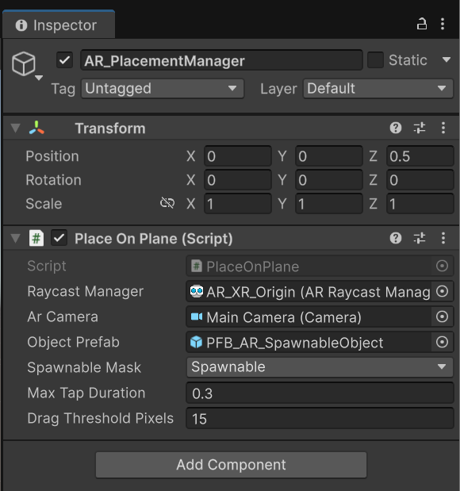
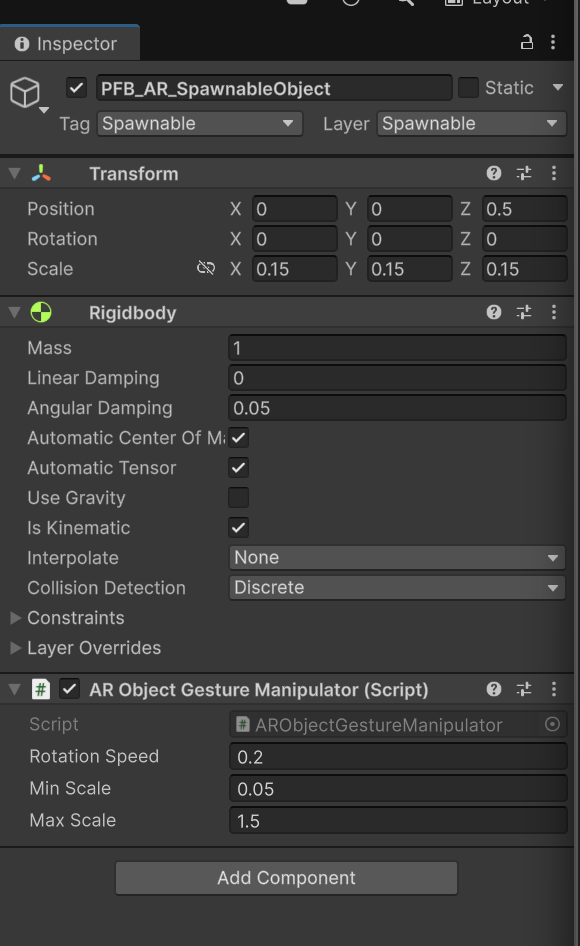

Realidad aumentada
Añade elementos digitales al espacio físico visto a través de una cámara. El usuario verá el entorno real desde el móvil y colocará objetos virtuales sobre superficies detectadas.
Construir un prototipo AR funcional capaz de detectar planos y colocar y manipular objetos sobre ellos.
En este cuarto laboratorio se introduce el desarrollo de experiencias de realidad aumentada con Unity. A diferencia de los laboratorios anteriores, donde el usuario se movía dentro de una escena virtual, aquí el espacio físico real se convierte en parte activa de la experiencia. El alumnado creará una escena AR capaz de detectar mesas y suelos mediante la cámara del móvil. Un toque breve colocará una única instancia sobre un plano horizontal; tocar el objeto lo seleccionará, un arrastre iniciado sobre él lo rotará y una pinza escalará la instancia seleccionada. Otro toque breve sobre el plano la recolocará conservando orientación y escala. La práctica se centra en AR Foundation, ARCore XR Plugin, AR Plane Manager, AR Raycast Manager y scripts básicos de interacción táctil.
Añade elementos digitales al espacio físico visto a través de una cámara. El usuario verá el entorno real desde el móvil y colocará objetos virtuales sobre superficies detectadas.
Paquete de Unity que permite desarrollar aplicaciones AR multiplataforma. Capa común para trabajar con ARCore (Android) y ARKit (iOS).
Paquete específico que permite que Unity use las capacidades AR de dispositivos Android compatibles con ARCore.
Objeto que controla el ciclo de vida de la experiencia AR: inicio, actualización y estado de la sesión.
Conecta el mundo físico detectado por el dispositivo con el sistema de coordenadas de Unity. Incluye la cámara AR.
Detecta superficies reales (suelos, mesas, paredes) y genera representaciones de esos planos dentro de la escena Unity.
Permite lanzar rayos desde la pantalla hacia el entorno AR para detectar dónde toca el usuario sobre un plano real.
Objeto virtual preparado para ser instanciado sobre una superficie detectada.
Acciones con uno o dos dedos sobre la pantalla. En este lab se usan para rotar y escalar el objeto colocado.
Realizar en la copia inmersivo-curso-ar, después de duplicar el proyecto VR según el paso 1 y antes de configurar AR Session. Android es el recorrido principal de esta práctica; iPhone/iPad utiliza la alternativa ARKit.
| Paquete | Identificador | Comprobación |
|---|---|---|
| AR Foundation | com.unity.xr.arfoundation | Obligatorio para esta práctica. |
| Google ARCore XR Plugin | com.unity.xr.arcore | Solo si se trabaja con Android. |
| Apple ARKit XR Plugin | com.unity.xr.arkit | Solo si se trabaja con iPhone/iPad. |
Realizar esta configuración en la copia del proyecto AR. Aunque el visor y el teléfono pueden usar Android, en este laboratorio se prepara el proveedor para AR móvil.
Si no aparece la pestaña Android: cerrar el editor y abrir Unity Hub → Installs → menú de la versión del editor → Add modules. Instalar Android Build Support con Android SDK & NDK Tools y OpenJDK. Volver a abrir el proyecto.
Si no aparece ARCore: abrir Window → Package Manager → Unity Registry, instalar Google ARCore XR Plugin compatible con la versión de AR Foundation y volver a los ajustes.
Solo para la alternativa iPhone/iPad: seleccionar la pestaña iOS y activar ARKit en lugar de ARCore. El recorrido principal de este laboratorio utiliza Android.
Abrir Window → Package Manager → In Project y comprobar que aparecen:
Si ya aparecen, no instalarlos otra vez. Shader Graph no es necesario para completar este laboratorio, porque no se van a crear shaders personalizados.
Hacer una captura de Package Manager → In Project donde se vean AR Foundation y Google ARCore XR Plugin instalados.
Completar Preparación del Proyecto para AR (AR Foundation). Instalar únicamente los paquetes ausentes. Continuar con ARCore para Android o con la alternativa ARKit para iPhone/iPad descrita en ese bloque.

using System.Collections.Generic; // Permite utilizar listas genéricas, como List<ARRaycastHit> y List<Touch>.
using UnityEngine; // Importa GameObject, Transform, vectores, cámara y demás tipos básicos de Unity.
using UnityEngine.XR.ARFoundation; // Importa ARRaycastManager y ARRaycastHit para consultar las superficies AR.
using UnityEngine.XR.ARSubsystems; // Importa TrackableType para limitar la consulta al interior de los planos.
using UnityEngine.InputSystem.EnhancedTouch; // Importa el soporte táctil mejorado que registra dedos y su evolución.
using Touch = UnityEngine.InputSystem.EnhancedTouch.Touch; // Usa el nombre Touch para el toque de EnhancedTouch, evitando confundirlo con UnityEngine.Touch.
using TouchPhase = UnityEngine.InputSystem.TouchPhase; // Usa TouchPhase para distinguir inicio, movimiento, final y cancelación del toque.
// Unico lector de la entrada tactil: coordina colocacion, seleccion y gestos.
public class PlaceOnPlane : MonoBehaviour // Define el componente del gestor que coordina todos los gestos de la escena.
{ // Abre la clase.
[SerializeField] private ARRaycastManager raycastManager; // Expone Raycast Manager en el Inspector para asignar el componente del origen AR.
[SerializeField] private Camera arCamera; // Expone AR Camera para asignar la cámara que convierte puntos de pantalla en rayos.
[SerializeField] private GameObject objectPrefab; // Expone Object Prefab para asignar la plantilla que se instanciará.
[SerializeField] private LayerMask spawnableMask; // Expone Spawnable Mask para que el raycast físico detecte solo las capas elegidas.
[SerializeField] private float maxTapDuration = 0.3f; // Limita a 0,3 segundos la duración de un toque breve; se puede ajustar en el Inspector.
[SerializeField] private float dragThresholdPixels = 15f; // Define la distancia en píxeles a partir de la cual el toque se considera arrastre.
private readonly List<ARRaycastHit> hits = new List<ARRaycastHit>(); // Crea una lista reutilizable donde el raycast AR guarda sus resultados.
private readonly List<Touch> fingers = new List<Touch>(); // Crea una lista reutilizable para los toques que siguen en curso durante este frame.
private ARObjectGestureManipulator spawnedObject; // Guarda la única instancia creada para recolocarla en vez de generar copias.
private ARObjectGestureManipulator selectedObject; // Guarda el objeto seleccionado que recibirá las órdenes de escala.
private ARObjectGestureManipulator dragObject; // Guarda el objeto sobre el que comenzó el arrastre y que podrá rotar.
private bool singlePending; // Indica si se está siguiendo un gesto de un dedo pendiente de finalizar.
private bool blockSingleUntilRelease; // Impide interpretar como tap el dedo que queda después de una pinza.
private bool dragged; // Registra si el dedo superó el desplazamiento permitido para un tap.
private int fingerId; // Identifica el toque concreto que inició el gesto de un dedo.
private Vector2 startPosition; // Guarda la posición inicial del toque en píxeles de pantalla.
private Vector2 lastPosition; // Guarda la posición más reciente del toque seguido, incluida su liberación.
private float startTime; // Guarda el instante de inicio para medir la duración del tap.
private float previousPinchDistance; // Guarda la separación anterior entre los dedos para calcular la proporción de escala.
private int pinchIdA = -1; // Identifica el primer toque de la pinza; -1 significa que aún no hay uno registrado.
private int pinchIdB = -1; // Identifica el segundo toque de la pinza.
private void OnEnable() // Unity llama a este método cuando el componente se habilita.
{ // Abre el método.
EnhancedTouchSupport.Enable(); // Habilita el registro de toques mejorados que consultará Update.
ResetGesture(); // Limpia el estado del gesto para comenzar la siguiente interacción sin datos anteriores.
} // Cierra el método.
private void OnDisable() // Unity llama a este método cuando el componente se deshabilita.
{ // Abre el método.
EnhancedTouchSupport.Disable(); // Equilibra la llamada a Enable y libera la solicitud de soporte táctil de este componente.
ResetGesture(); // Limpia el estado del gesto para comenzar la siguiente interacción sin datos anteriores.
} // Cierra el método.
private void ResetGesture() // Agrupa la limpieza del estado temporal; no borra el objeto creado ni la selección.
{ // Abre el método.
singlePending = false; // Descarta cualquier tap de un dedo que estuviera pendiente.
blockSingleUntilRelease = false; // Permite iniciar un nuevo gesto de un dedo.
dragObject = null; // Deja de asociar el arrastre a un objeto.
previousPinchDistance = 0f; // Borra la medida anterior para no reutilizarla en otra pinza.
pinchIdA = pinchIdB = -1; // Olvida las identidades de los dos toques de la pinza.
} // Cierra el método.
private void Update() // Unity ejecuta esta lectura de entrada una vez por frame mientras el componente está activo.
{ // Abre el método.
if (raycastManager == null || arCamera == null || objectPrefab == null) // Comprueba que estén asignadas las referencias necesarias antes de procesar la entrada.
return; // Termina esta llamada al método; no ejecuta las instrucciones posteriores.
fingers.Clear(); // Vacía la lista del frame anterior conservando la misma lista para reutilizarla.
foreach (Touch touch in Touch.activeTouches) // Recorre los registros táctiles disponibles, incluidos los que terminan en este frame.
{ // Abre el bloque de instrucciones.
if (singlePending && touch.touchId == fingerId) // Actualiza únicamente el toque que inició el gesto de un dedo pendiente.
{ // Abre el bloque de instrucciones.
lastPosition = touch.screenPosition; // Guarda su posición actual en coordenadas de pantalla.
if (Vector2.Distance(startPosition, lastPosition) > dragThresholdPixels) // Compara el desplazamiento desde el inicio con el umbral de arrastre.
dragged = true; // Marca el gesto como arrastre para que al soltar no se convierta en una colocación.
// Un toque cancelado nunca cuenta como tap.
if (touch.phase == TouchPhase.Canceled) // Detecta un toque interrumpido por el sistema, que no debe contar como tap.
singlePending = false; // Descarta cualquier tap de un dedo que estuviera pendiente.
} // Cierra el bloque de instrucciones.
if (touch.phase != TouchPhase.Ended && touch.phase != TouchPhase.Canceled) // Filtra los toques terminados o cancelados antes de contar los dedos en curso.
fingers.Add(touch); // Añade a la lista un toque que sigue en curso.
} // Cierra el bloque de instrucciones.
if (fingers.Count == 0) // Procesa el final del gesto cuando ya no quedan dedos en curso.
{ // Abre el bloque de instrucciones.
if (singlePending && !blockSingleUntilRelease && !dragged && // Exige un gesto pendiente que no haya sido bloqueado ni convertido en arrastre; la condición continúa abajo.
Time.unscaledTime - startTime <= maxTapDuration) // Exige además una duración máxima; usa tiempo real independiente de la velocidad del juego.
CompleteTap(lastPosition); // Procesa la selección o colocación en la última posición del tap al soltar.
ResetGesture(); // Limpia el estado del gesto para comenzar la siguiente interacción sin datos anteriores.
return; // Termina esta llamada al método; no ejecuta las instrucciones posteriores.
} // Cierra el bloque de instrucciones.
if (fingers.Count >= 2) // Reserva los gestos con varios dedos para la escala y cancela la colocación pendiente.
{ // Abre el bloque de instrucciones.
// La pinza cancela el tap; no recolocar al retirar uno de los dedos.
singlePending = false; // Descarta cualquier tap de un dedo que estuviera pendiente.
blockSingleUntilRelease = true; // Bloquea nuevos taps de un dedo hasta que se hayan levantado todos los dedos.
dragObject = null; // Deja de asociar el arrastre a un objeto.
if (fingers.Count != 2) // Rechaza la escala si hay tres o más dedos, ya que este gesto necesita exactamente dos.
{ // Abre el bloque de instrucciones.
previousPinchDistance = 0f; // Borra la medida anterior para no reutilizarla en otra pinza.
return; // Termina esta llamada al método; no ejecuta las instrucciones posteriores.
} // Cierra el bloque de instrucciones.
Touch a = fingers[0]; // Obtiene el primer toque de la pareja actual.
Touch b = fingers[1]; // Obtiene el segundo toque de la pareja actual.
float distance = Vector2.Distance(a.screenPosition, b.screenPosition); // Calcula la separación actual entre los dos dedos en píxeles.
bool samePair = a.touchId == pinchIdA && b.touchId == pinchIdB; // Comprueba que la pareja sea la misma que en la medida anterior.
if (samePair && previousPinchDistance > 1f && selectedObject != null) // Solo escala si existe una medida anterior válida de la misma pareja y un objeto seleccionado.
selectedObject.ScaleBy(distance / previousPinchDistance); // Envía la proporción entre distancias: mayor que 1 amplía y menor que 1 reduce.
previousPinchDistance = distance; // Conserva la distancia actual como referencia del próximo frame.
pinchIdA = a.touchId; // Registra la identidad del primer toque de la pareja.
pinchIdB = b.touchId; // Registra la identidad del segundo toque de la pareja.
return; // Termina esta llamada al método; no ejecuta las instrucciones posteriores.
} // Cierra el bloque de instrucciones.
previousPinchDistance = 0f; // Borra la medida anterior para no reutilizarla en otra pinza.
if (blockSingleUntilRelease) return; // Ignora el dedo restante de una pinza hasta que se levante.
Touch current = fingers[0]; // Obtiene el único toque en curso para procesar el gesto de un dedo.
if (!singlePending) // Comprueba si todavía no se está siguiendo un gesto de un dedo.
{ // Abre el bloque de instrucciones.
// No iniciar un gesto con un dedo que ya estaba moviendose.
if (current.phase != TouchPhase.Began) return; // Solo admite un toque recién iniciado para evitar adoptar un dedo que ya se movía.
singlePending = true; // Comienza el seguimiento de un posible tap o arrastre.
dragged = false; // Inicializa el gesto sin desplazamiento suficiente para ser arrastre.
fingerId = current.touchId; // Guarda la identidad del toque que se seguirá hasta su final.
startPosition = lastPosition = current.screenPosition; // Inicializa tanto la posición inicial como la última posición con el punto de contacto.
startTime = Time.unscaledTime; // Registra el momento de inicio del gesto.
dragObject = FindObject(current.screenPosition); // Comprueba si el gesto comenzó sobre el collider de un objeto seleccionable.
if (dragObject != null) selectedObject = dragObject; // Selecciona el objeto detectado al comenzar el gesto sobre él.
return; // Termina esta llamada al método; no ejecuta las instrucciones posteriores.
} // Cierra el bloque de instrucciones.
if (current.touchId != fingerId) // Detecta que el toque actual no corresponde al gesto de un dedo que se estaba siguiendo.
{ // Abre el bloque de instrucciones.
singlePending = false; // Descarta cualquier tap de un dedo que estuviera pendiente.
blockSingleUntilRelease = true; // Bloquea nuevos taps de un dedo hasta que se hayan levantado todos los dedos.
return; // Termina esta llamada al método; no ejecuta las instrucciones posteriores.
} // Cierra el bloque de instrucciones.
if (dragged && dragObject != null && current.phase == TouchPhase.Moved) // Solo permite rotar durante un movimiento que superó el umbral y comenzó sobre el objeto.
dragObject.RotateBy(current.delta.x); // Envía el desplazamiento horizontal de este frame al manipulador de rotación.
} // Cierra el método.
private ARObjectGestureManipulator FindObject(Vector2 screenPosition) // Busca un objeto seleccionable bajo una posición de la pantalla.
{ // Abre el método.
RaycastHit hit; // Declara el resultado que recibirá el raycast físico si encuentra un collider.
Ray ray = arCamera.ScreenPointToRay(screenPosition); // Construye un rayo desde la cámara AR que pasa por el punto de pantalla.
if (!Physics.Raycast(ray, out hit, Mathf.Infinity, spawnableMask, // Consulta colliders de las capas seleccionables; la llamada continúa en la siguiente línea.
QueryTriggerInteraction.Ignore)) return null; // Ignora colliders trigger y devuelve null si el raycast no encuentra un collider válido.
ARObjectGestureManipulator item = // Declara la referencia al manipulador que se buscará en la siguiente línea.
hit.collider.GetComponentInParent<ARObjectGestureManipulator>(); // Busca el manipulador en el objeto del collider o sus padres para admitir el collider del hijo.
return item != null && item.CompareTag("Spawnable") ? item : null; // Devuelve el manipulador solo si existe y su GameObject tiene la etiqueta Spawnable.
} // Cierra el método.
private void CompleteTap(Vector2 screenPosition) // Decide si el toque breve selecciona el cubo o coloca la instancia sobre un plano.
{ // Abre el método.
ARObjectGestureManipulator item = FindObject(screenPosition); // Consulta primero si el punto tocado corresponde al objeto virtual.
if (item != null) // Distingue la selección del objeto de un toque sobre el plano.
{ // Abre el bloque de instrucciones.
selectedObject = item; // Guarda el objeto tocado como seleccionado sin recolocarlo.
return; // Termina esta llamada al método; no ejecuta las instrucciones posteriores.
} // Cierra el bloque de instrucciones.
if (!raycastManager.Raycast(screenPosition, hits, // Consulta planos AR bajo el toque; esta llamada es distinta del raycast físico de selección.
TrackableType.PlaneWithinPolygon) || hits.Count == 0) return; // Exige un impacto dentro de los límites del plano; sin resultado no coloca nada.
Pose pose = hits[0].pose; // Obtiene posición y orientación del primer impacto devuelto por el gestor AR.
if (spawnedObject == null) // Distingue la primera colocación de las recolocaciones posteriores.
{ // Abre el bloque de instrucciones.
GameObject instance = Instantiate(objectPrefab, pose.position, pose.rotation); // Crea el prefab con su pivote de base en la posición y orientación del impacto.
spawnedObject = instance.GetComponent<ARObjectGestureManipulator>(); // Obtiene el manipulador de la raíz de la instancia creada.
if (spawnedObject == null) // Distingue la primera colocación de las recolocaciones posteriores.
{ // Abre el bloque de instrucciones.
Debug.LogError("El prefab necesita ARObjectGestureManipulator en su raiz.", this); // Muestra un error con referencia a este gestor si el prefab carece del componente necesario.
Destroy(instance); // Elimina la instancia incorrecta para no dejar un objeto que no pueda manipularse.
return; // Termina esta llamada al método; no ejecuta las instrucciones posteriores.
} // Cierra el bloque de instrucciones.
} // Cierra el bloque de instrucciones.
else // Ejecuta la alternativa cuando ya existe una instancia colocada.
{ // Abre el bloque de instrucciones.
// Trasladar sin perder la rotacion ni la escala elegidas por el usuario.
spawnedObject.transform.position = pose.position; // Cambia únicamente la posición y conserva la rotación y la escala actuales.
} // Cierra el bloque de instrucciones.
selectedObject = spawnedObject; // Deja seleccionada la instancia que acaba de colocarse o recolocarse.
} // Cierra el método.
} // Cierra la clase.
Creación del código: Guardar PlaceOnPlane.cs y ARObjectGestureManipulator.cs dentro de inmersivo-curso-ar/Assets/_Project/Scripts. En Unity se encuentran en Project → Assets → _Project → Scripts. Guardar ambos antes de revisar Console. Añadir PlaceOnPlane al objeto AR_PlacementManager y ARObjectGestureManipulator a la raíz AR_SpawnableObject del prefab PFB_AR_SpawnableObject.


using UnityEngine; // Importa GameObject, Transform, vectores, cámara y demás tipos básicos de Unity.
// No lee toques: recibe ordenes del unico gestor PlaceOnPlane.
public class ARObjectGestureManipulator : MonoBehaviour // Define el componente del prefab que ejecuta rotación y escala sin leer la pantalla.
{ // Abre la clase.
[SerializeField] private float rotationSpeed = 0.2f; // Define cuántos grados rota el objeto por cada píxel horizontal del gesto.
[SerializeField] private float minScale = 0.05f; // Define el límite mínimo de escala uniforme de la raíz del prefab.
[SerializeField] private float maxScale = 1.5f; // Define el límite máximo de escala uniforme de la raíz del prefab.
public void RotateBy(float horizontalPixels) // Expone el método que recibe del gestor un desplazamiento horizontal en píxeles.
{ // Abre el método.
transform.Rotate(Vector3.up, -horizontalPixels * rotationSpeed, Space.World); // Rota alrededor del eje vertical del mundo; el signo negativo establece el sentido del giro.
} // Cierra el método.
public void ScaleBy(float factor) // Expone el método que recibe la proporción de escala calculada con la pinza.
{ // Abre el método.
if (factor <= 0f || float.IsNaN(factor) || float.IsInfinity(factor)) return; // Rechaza factores negativos, cero, no numéricos o infinitos antes de cambiar la escala.
float minimum = Mathf.Max(0.001f, minScale); // Garantiza que el mínimo de escala sea positivo aunque se configure mal en el Inspector.
float maximum = Mathf.Max(minimum, maxScale); // Garantiza que el máximo no sea menor que el mínimo.
float size = Mathf.Clamp(transform.localScale.x * factor, minimum, maximum); // Multiplica la escala actual por el factor y limita el resultado al intervalo permitido.
transform.localScale = Vector3.one * size; // Aplica el mismo tamaño a X, Y y Z para mantener las proporciones del objeto.
} // Cierra el método.
} // Cierra la clase.
Creación del código: Guardar PlaceOnPlane.cs y ARObjectGestureManipulator.cs dentro de inmersivo-curso-ar/Assets/_Project/Scripts. En Unity se encuentran en Project → Assets → _Project → Scripts. Guardar ambos antes de revisar Console. Añadir PlaceOnPlane al objeto AR_PlacementManager y ARObjectGestureManipulator a la raíz AR_SpawnableObject del prefab PFB_AR_SpawnableObject.


Hay una Main Camera antigua, la cámara AR no está asociada al XR Origin, ARCore no está habilitado o faltan permisos de cámara.
Falta AR Plane Manager, Detection Mode mal configurado, entorno con poca textura, poca luz o dispositivo no compatible con ARCore.
Falta AR Raycast Manager, PlaceOnPlane sin referencias, prefab no asignado, el toque no cae sobre un plano detectado o el plano no es PlaneWithinPolygon.
Escala incorrecta del prefab. En Unity 1 unidad ≈ 1 metro.
Si el objeto no rota, revisar ARObjectGestureManipulator en la raíz, AR Camera y Spawnable Mask en el gestor, Tag Spawnable en la raíz y Layer Spawnable en el hijo con collider. Iniciar el arrastre sobre el cubo.
Si no escala, seleccionar primero el cubo, comprobar el manipulador en la raíz y los límites Min Scale y Max Scale. Usar exactamente dos dedos y levantar ambos al terminar.
Android Build Support no instalado, falta SDK/NDK/OpenJDK, Android no seleccionado, dispositivo no autorizado, ARCore no habilitado o escena no añadida al build.
Objeto AR situado. Crear un prototipo AR con un objeto virtual situado en el espacio físico que cumpla los criterios siguientes.
La visita a la página se registra como progreso de lectura. Esta confirmación registra la sesión como completada.